Gargantúa
El agujero negro que ordena todo el sistema: decide qué planeta es habitable, cuánto cuesta bajar a él y a qué velocidad corre el tiempo cerca suyo. Y en el tramo final deja de ser un límite: es la puerta por la que Cooper se deja caer.
Qué es
Un agujero negro supermasivo —unos cien millones de veces la masa del Sol— y el centro de gravedad de toda la historia: los planetas que explora la Endurance orbitan a su alrededor. En pantalla es una esfera perfectamente negra abrazada por un anillo de luz dorada. Ese anillo es su disco de acreción, gas que cae en espiral; parece envolver la esfera por arriba y por abajo a la vez porque la gravedad curva la luz del disco de atrás y la trae por encima del horizonte y por debajo.
Lo que no se ve es lo que mueve la trama: Gargantúa gira sobre sí misma a casi la velocidad máxima que permite la física. Esa rotación extrema es la que deja que un planeta orbite tan cerca sin ser despedazado, y la que hace que ahí una hora valga siete años. El agujero negro no es el escenario del final; es el reloj de toda la película.
En la historia
El agujero de gusano cerca de Saturno no lleva a cualquier lado: lleva al sistema de Gargantúa. Sus tres candidatos —Miller, Mann y Edmunds— son mundos que orbitan este agujero negro, y su gravedad decide cuáles están al alcance y cuáles quedaron del otro lado del punto sin retorno. El precio se paga en tiempo: mientras Cooper y Amelia pasan unas horas en Miller, Romilly envejece veintitrés años esperándolos en la nave.
En la maniobra final, para darle a la nave de Amelia el envión que necesita para llegar a Edmunds, la Endurance rodea Gargantúa a toda velocidad y se deja caer hacia ella. Cooper y TARS se sueltan para aligerar el peso —soltar masa es soltar a Cooper— y cruzan el horizonte de sucesos. Ese horizonte, que durante toda la película fue el límite del que no se vuelve, es a donde Cooper elige ir.
Del otro lado no hay una pared: hay un teseracto, una construcción de cuatro dimensiones que unos humanos del futuro levantaron alrededor de la singularidad. Desde ahí Cooper alcanza la estantería de la habitación de Murph —la primera imagen de la película— y le pasa, a través de la gravedad, los datos que faltaban para resolver la ecuación. El agujero negro deja de ser un final y se vuelve un mensaje.
Rasgos distintivos
- El disco que parece rodearla por completo: la lente gravitacional trae la luz del disco de atrás por encima y por debajo del horizonte, así que se ve un anillo arriba, otro abajo y la esfera negra en el medio.
- Un halo casi simétrico en lugar de la «sombra» torcida clásica de un agujero negro: Nolan atenuó el brillo Doppler que en la realidad haría un lado mucho más intenso que el otro.
- Un disco de acreción tibio, dorado y sin chorros —anémico a propósito— para que los astronautas puedan mirarlo sin quedar ciegos.
- Gira a casi el 100 % del máximo posible: por eso el planeta de Miller sobrevive tan cerca y una hora ahí son siete años afuera.
- Su gravedad es el mapa del viaje: ordena los planetas en alcanzables (Miller, Mann) y perdidos del otro lado (Edmunds).
- El horizonte de sucesos como destino, no como límite: es lo que Cooper suelta para aligerar la nave, y donde encuentra el teseracto.
- Unos cien millones de masas solares. El nombre es el del gigante de Rabelais.
En celuloide
El descenso a Gargantúa en una tira que desfila sin cortes; el cursor o el foco la frenan para mirarla de cerca.


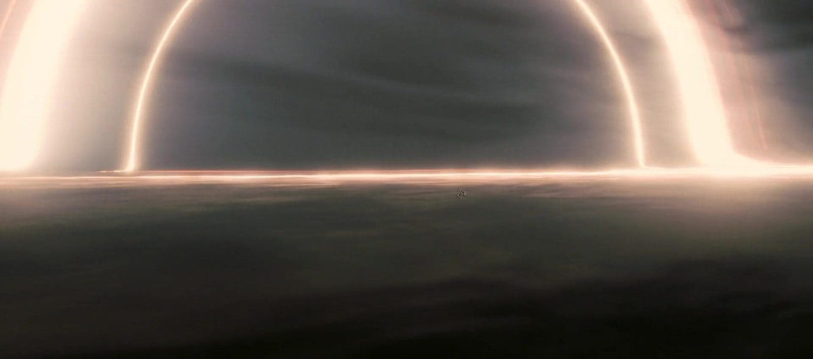
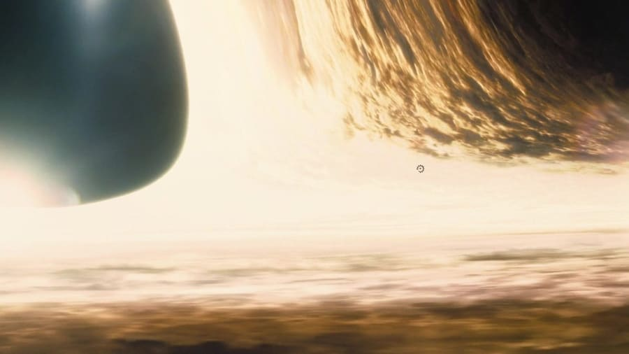
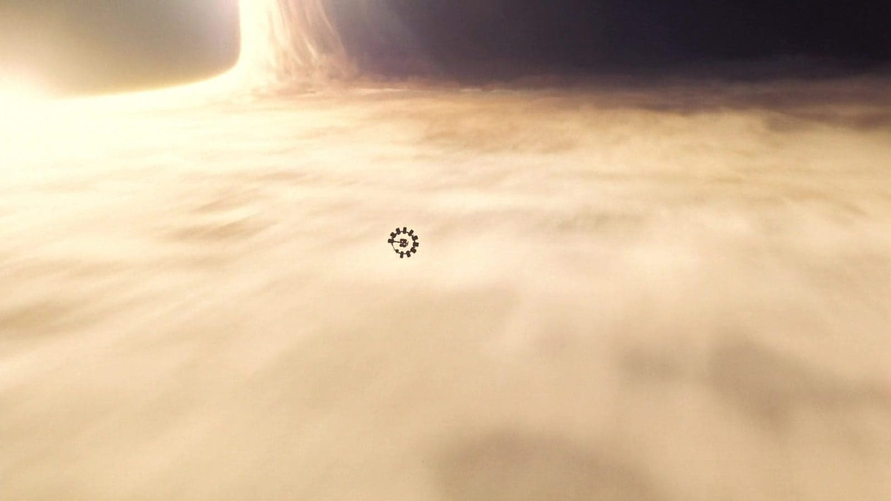
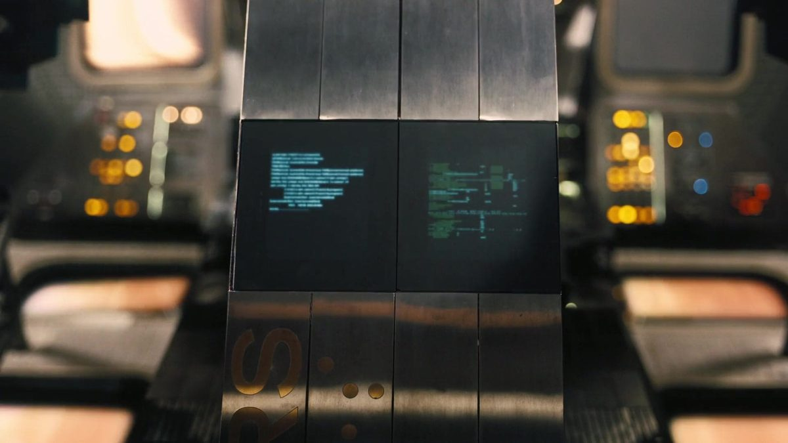
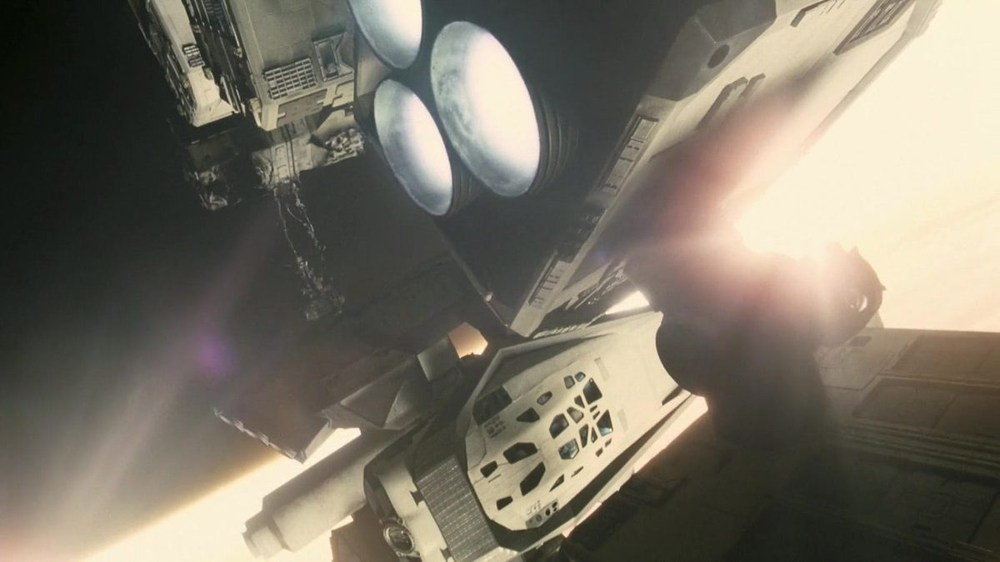
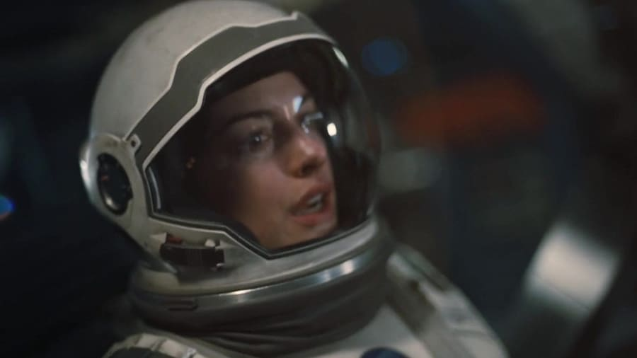
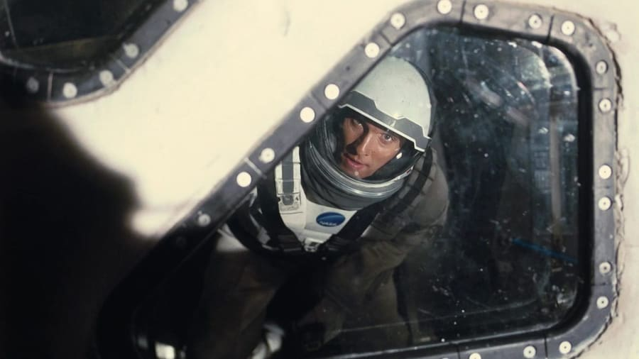
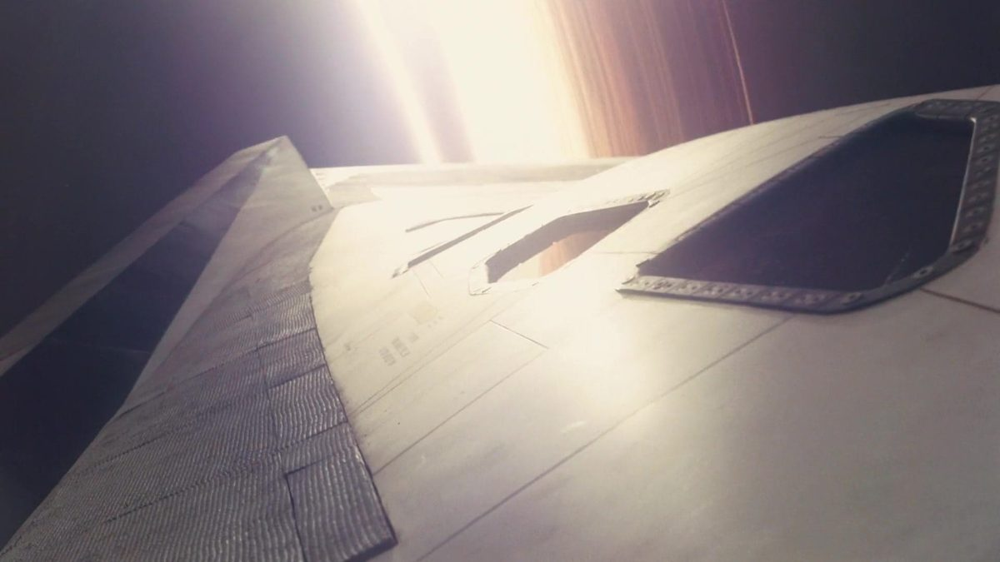
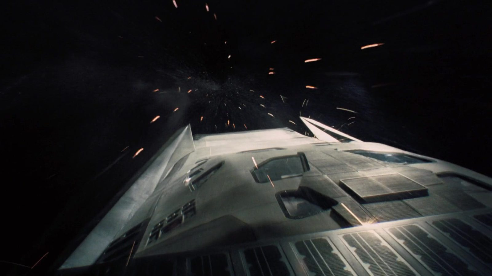
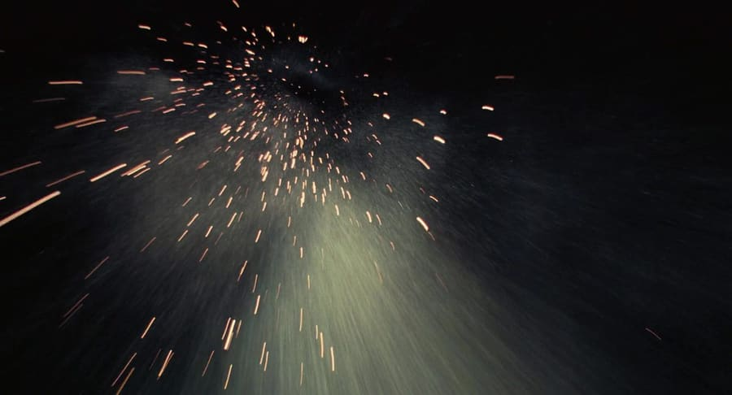
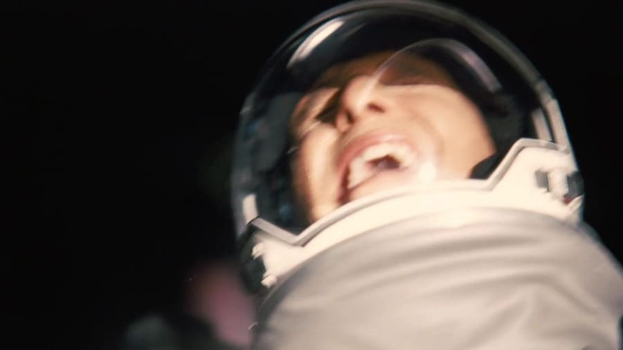
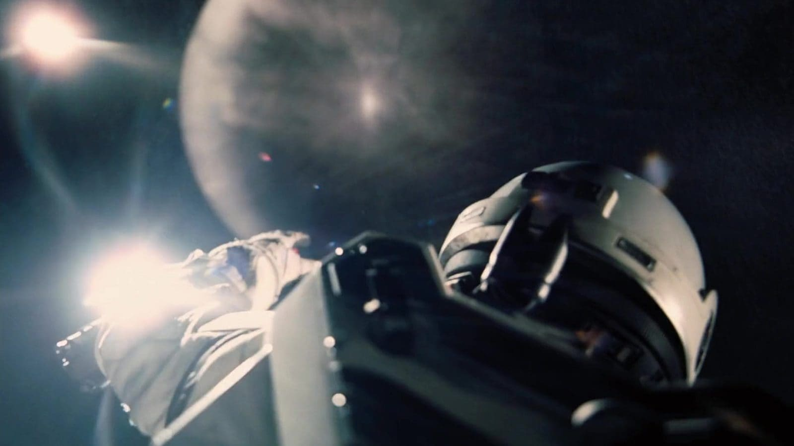
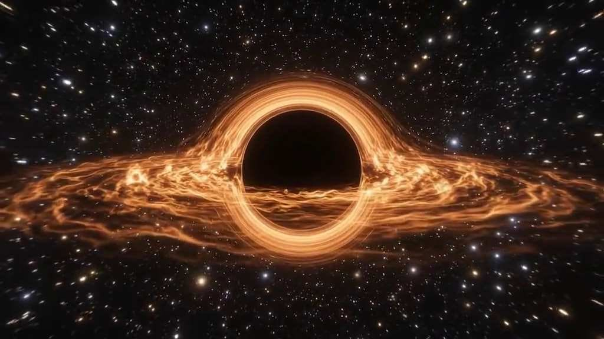
La ciencia
Es la parte de la película con más rigor físico. El físico Kip Thorne trabajó con el estudio de efectos Double Negative, que escribió un motor de render nuevo para trazar los rayos de luz a través del espacio-tiempo curvado por Gargantúa. El anillo que la envuelve, el halo casi simétrico y las estrellas que se duplican en el borde no están pintados: son lente gravitacional calculada.
El trabajo dio para dos artículos científicos revisados por pares —uno de astrofísica, otro para la comunidad de gráficos— y las imágenes salieron lo bastante precisas como para servir de material de estudio. La única licencia que se tomaron fue bajarle el brillo al disco para que la escena se pudiera filmar.